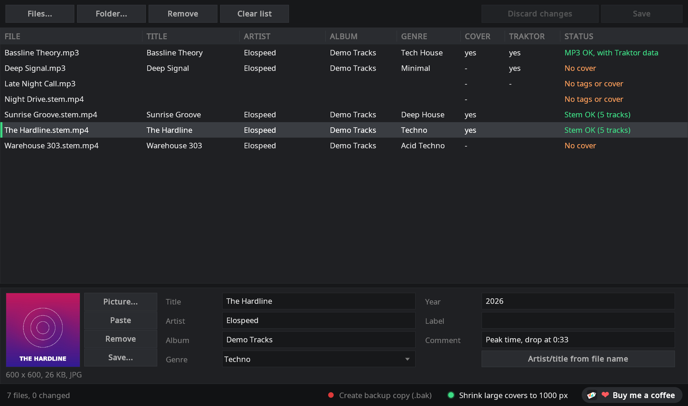
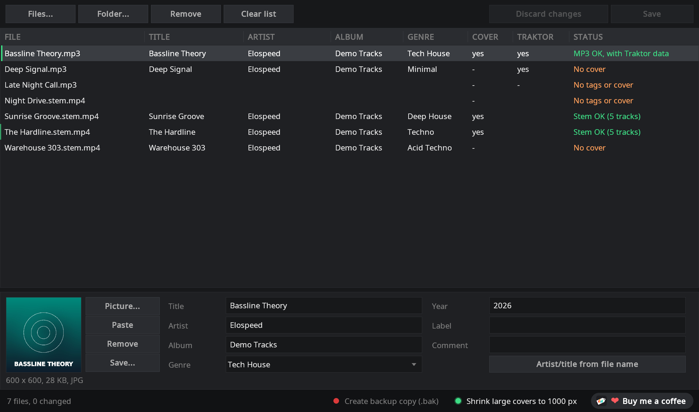

Tags and covers for your
Traktor stems and MP3s
StemTagger sets title, artist, album, genre and cover art in .stem.mp4 and MP3 files, for one track or a whole folder at once. Only the tags are rewritten: the stems, the audio and Traktor's cue points stay exactly as they were. One small, portable Windows program, free and open source.
- Free & MIT licensed
- Windows 10 / 11
- Portable, no installation
- Stem files and MP3
- Cue points stay intact
- English, German, Spanish

Tidy tags without risking your stems
Regular tag editors sometimes rewrite a stem file in a way that makes Traktor load it as a normal track afterwards. StemTagger was made for exactly these files.
The stems stay untouched
Only the tag list inside the file changes. The five audio tracks and the stem data (names and colours) stay byte for byte the same. The new file is checked before it replaces the original; if anything is off, the original stays as it was.
MP3 with Traktor data
Since version 1.1 StemTagger also edits MP3s with its own ID3 code. Traktor's cue points, loops, beatgrid and analysis are kept, and a column shows which MP3s Traktor has already analysed.
Many files at once
Drop files or whole folders (subfolders included), select several rows and set the album, genre or cover for all of them. Fields with different values show <different> and stay per file until you change them.
Cover made easy
Drag an image onto the window, paste one copied in the browser with Ctrl+V or pick a file. JPEG and PNG stay as they are, large images can be scaled down to 1000 px, and a cover can be saved as an image again.
Missing data at a glance
The status column shows “No tags” or “No cover”, the Cover and Traktor columns show what is there. Click a column header to sort, and the gaps in your collection are right at the top.
Quick helpers
A genre list with about 50 styles that completes as you type, artist and title straight from the file name (Artist - Title.stem.mp4) and an optional backup copy before the first save.
MP3s, with Traktor's cue points kept
Traktor stores its cue points, loops and beatgrid inside the MP3 itself. Many tools drop that data when they save. StemTagger doesn't.
- Only the changed fields are replaced: audio and everything else in the tag stay byte for byte the same, including Traktor's own entry (
TRAKTOR4) with cue points, loops, beatgrid and analysis - Traktor column: shows at a glance which MP3s Traktor has already analysed
- Same fields as for stem files: title, artist, album, genre, year, label, comment and cover, in the ID3 version of the file (2.3 or 2.4)
- Tested in Traktor Pro 4: an MP3 with cue points, markers and a loop, tagged with StemTagger and loaded again, everything still there
- Very old or damaged tags are shown but never changed (“read only”)

How it works
Three steps, no installation.
- Download and unzipGet
StemTagger-<version>.zipfrom GitHub, unzip it anywhere and startStemTagger.exe. Keep thelangfolder next to it. - Drop your tracks inDrag
.stem.mp4files, MP3s or whole folders into the window. Select one or more rows and fill in the fields below, cover included. - SaveClick Save (or Ctrl+S). Only files you changed are written. Then reload them in Traktor or Mixxx and the new tags show up.
Part of the StemMaker family
Elospeed StemMaker turns your own MP3s into Traktor stem files and already ships StemTagger as an add-on: one click in the add-on bar, or right-click a file and choose “Edit tags...”. Already have stem files and only need the tags? Then the StemTagger download on its own is all you need.
Questions and answers
Is StemTagger really free?
Yes. StemTagger is open source under the MIT licence. There are no ads, no account and no paid version. If you like it, you can leave a voluntary donation on Ko-fi.
Why not use my usual tag editor?
For normal MP3s that is often fine. Stem files are special: besides the master they contain four stem tracks and a block with stem names and colours. Some tag editors rewrite the whole file when saving and leave that block out, and Traktor then loads the file as a normal track. Some also drop Traktor's own data in MP3s (cue points, loops, beatgrid). StemTagger changes only the tag entries and checks the new file before it replaces the original.
Which files does it handle?
Traktor stem files (.stem.mp4) and MP3 files. Fields: title, artist, album, genre, year, label, comment and cover. Album artist, track number, BPM and key are kept as they are in the file.
What about BPM and key?
Traktor and Mixxx detect them during analysis. Values that are already in the file are kept.
Which DJ software shows the tags?
Tested by us with Traktor Pro 4 and Mixxx 2.6 beta: title, artist, album, genre and cover show up, and the stem files still load as stems. Programs that already know a file may need to re-read its tags.
Windows shows “Windows protected your PC”. Is that a problem?
StemTagger is not digitally signed, because signing certificates cost money every year. Click “More info” and then “Run anyway”. The full source code is on GitHub, and you can check the download on VirusTotal or build it yourself.
Which language does it use?
English, German or Spanish. On its own StemTagger follows the language of Windows (German on a German Windows, English otherwise). As a StemMaker add-on it uses the language you picked in StemMaker.
Where can I ask questions or suggest ideas?
In the GitHub Discussions of StemMaker. You can attach screenshots and files there. Reading works without an account, writing needs a free GitHub account.
Ready to tidy up your collection?
Download the ZIP, unzip it and drag in your first folder.
StemTagger is a one-person hobby project, free for good. If it saves you some time, you can buy me a coffee on Ko-fi ☕ or simply give it a star on GitHub. Both are entirely optional.